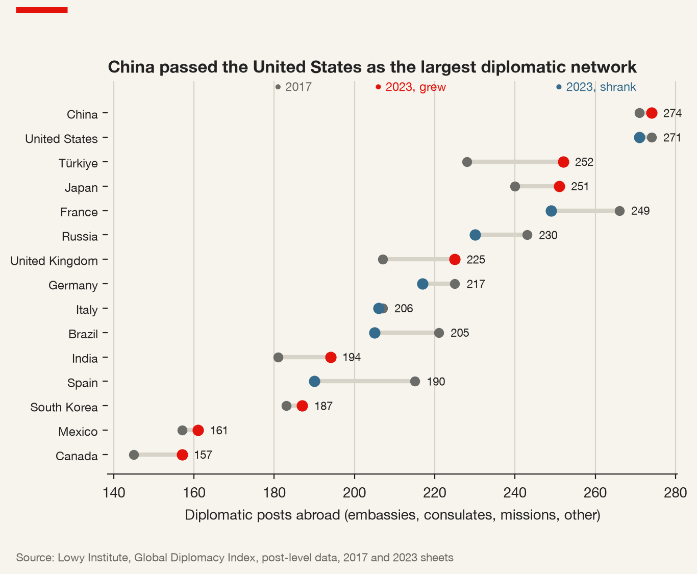
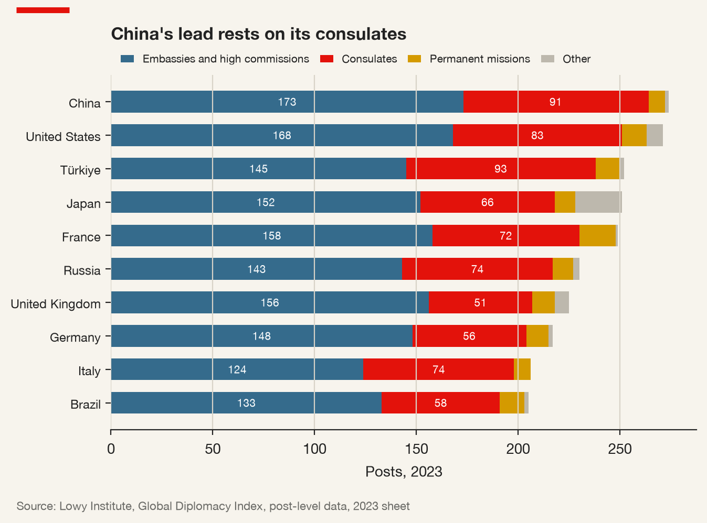
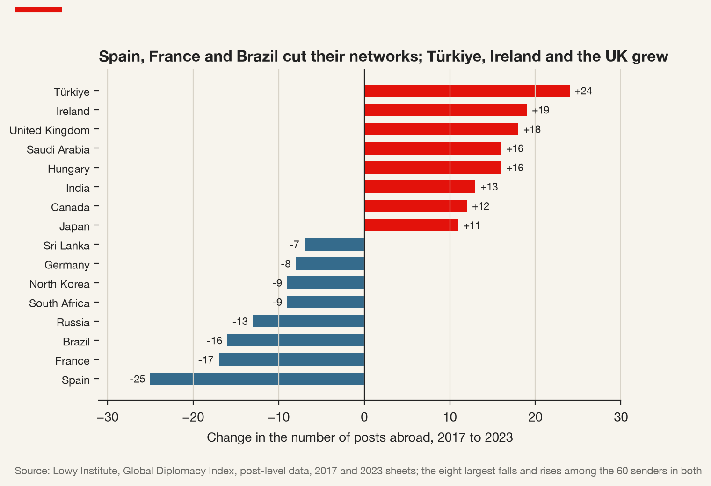
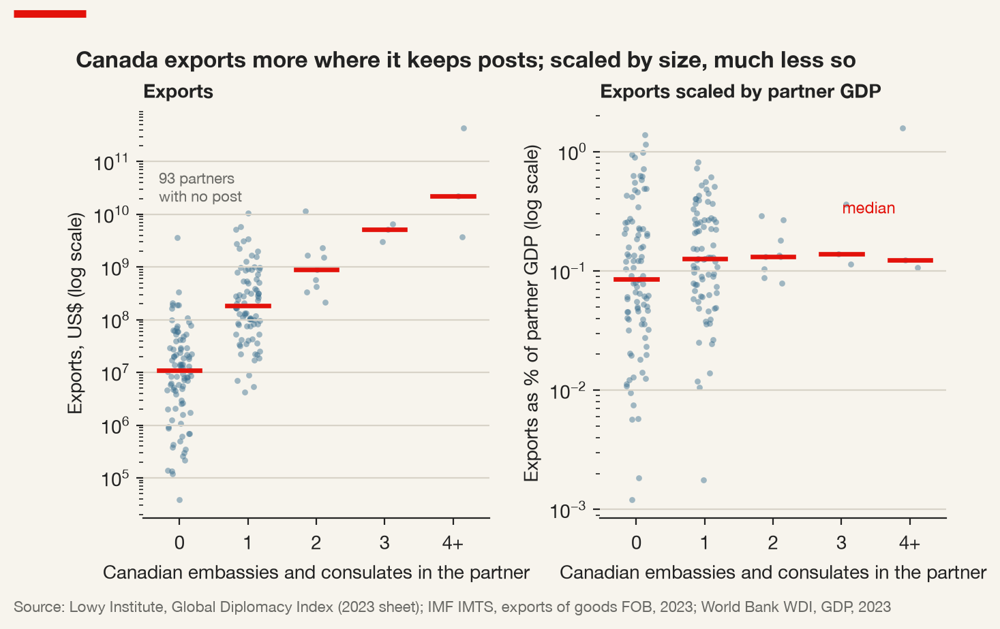

9 Economic Diplomacy Redefined: Two-Level Games, Embassies and the Firm
9.1 From serving firms to screening them
For most of the period covered by Chapter 2 — the decades in which the liberal economic order was built out and then globalised — economic diplomacy had a settled meaning and a settled direction. Diplomats negotiated trade agreements, opened markets, promoted exports and courted investors. Trade commissioners in embassies found distributors for small exporters; ministers led delegations of chief executives on state visits; export credit agencies insured contracts that private insurers would not touch. The state served the firm, and the firm’s success abroad was counted as the state’s success.
That meaning has not disappeared, but it has been joined by others, and the direction of travel has partly reversed. The same governments that promote their firms abroad now screen foreign firms at home, restrict what their own firms may sell and to whom, and draw companies into public quarrels conducted on social media. A multinational today is still the beneficiary of economic diplomacy. It is also, increasingly, its object and its instrument — and sometimes a diplomat in its own right.
Economic diplomacy — the use of the instruments of foreign policy for economic ends, and of economic instruments for foreign-policy ends. The first covers trade negotiation, export and investment promotion; the second covers sanctions, export controls, aid and investment screening used to pursue security or political goals.
Commercial diplomacy — the part of economic diplomacy that serves particular firms and sectors: trade commissioners, market intelligence, introductions, advocacy in disputes, trade missions, export credit and investment promotion. Its unit of account is the firm, not the economy.
Three shifts have redefined the field. The first is securitisation: trade, investment and technology are now treated as matters of national security, so that a firm faces screening, export controls and “trusted vendor” rules not only from rival states but from its own side. The second is the move from promotion to coercion: the networks that were built to promote exports — financial messaging, payment systems, technology supply chains — are the same networks that states now use to deny access, as the chokepoints of Chapter 8 showed and the sanctions of Chapter 10 will show in detail. Home-state support can become home-state constraint overnight. The third is digitalisation: diplomacy is increasingly conducted in public, on social media, addressed to domestic and foreign audiences at once, and firms are pulled into it — through boycotts, hashtags and official denunciations — without having chosen to be.
This chapter takes the redefinition in three steps. It begins with the theory that best captures how international bargaining is shaped by domestic politics, Robert Putnam’s two-level game, and with the argument of Corneliu Bjola and Ilan Manor that digital diplomacy has changed how that game is played. It then turns to the empirical question at the heart of the evidence: whether the most traditional instrument of commercial diplomacy, the embassy, actually promotes exports, as Andrew Rose found. Finally it turns to the relationship between states and firms directly — bargaining, screening and the choice a firm faces about when to lean on its home state.
9.2 Two boards at once
Putnam’s article begins from a frustration with theories of international relations that treated the state as a unitary actor, and with theories of domestic politics that ignored the international environment (Putnam 1988). His alternative is to model an international negotiation as two games played simultaneously.
At Level I, negotiators representing their governments bargain with each other to reach a tentative agreement. At Level II, each negotiator’s domestic constituencies — legislatures, parties, interest groups, bureaucracies, public opinion — decide whether to ratify it. Ratification need not be formal; any domestic process that can kill an agreement counts. An agreement survives only if it is acceptable at both levels, on both sides.
Win-set — for a given Level II constituency, the set of possible Level I agreements that it would ratify. An agreement is possible only where the two sides’ win-sets overlap. The size of each win-set depends on the distribution of power and preferences at home, on the domestic institutions that govern ratification, and on the strategies of the negotiators themselves.
Three lessons follow, and each has a direct application to firms.
The first is that larger win-sets make agreement more likely. If many possible deals would be ratified at home, the negotiators have more room to find one that the other side can also accept. But a large win-set also leaves a negotiator open to being pushed: the other side knows that concessions can be extracted without endangering ratification.
The second, and the most counter-intuitive, is that a small win-set can be a bargaining asset. A negotiator who can say, credibly, “my parliament will never accept that” has a reason to refuse that the other side cannot argue away. Thomas Schelling had made a version of this point about the power of binding oneself; Putnam located the binding in domestic politics. The credibility matters. A constraint that is invented for bargaining purposes is a bluff, and bluffs can be called.
The third is that negotiators play both boards at once. A skilled negotiator does not simply report the constraints of Level II; he or she works to shape them — building support at home for a deal that is coming, and reaching across to the other side’s Level II to make its ratification easier. Putnam called the latter “reverberation”: a move at Level I that changes the balance of opinion in the other country’s domestic politics.
Putnam’s framework also explains two features of international agreements that otherwise look irrational. The first is involuntary defection: an agreement that a negotiator sincerely accepted fails at Level II because the domestic coalition behind it collapses. The second is the role of side-payments and issue linkage: a negotiator who cannot win ratification on the merits of a deal can enlarge the win-set by compensating the losers at home, or by linking the deal to a concession on another issue that brings a new constituency into the coalition. Both have a direct bearing on firms. The firms and sectors that stand to lose from an agreement are the ones a government must compensate or overrule; the firms that stand to gain are the ones it mobilises. And the domestic institutions that govern ratification — a legislature’s voting rules, the role of sub-national governments, the timing of elections — determine how large the win-set can be, which is why a firm’s analysis of a negotiation that affects it should begin with the other side’s ratification process rather than with the negotiators’ public statements.
9.2.1 Where the multinational sits
Draw the two-level game on a board — two negotiators facing each other at Level I, each standing on a circle of domestic constituencies at Level II — and ask where a multinational belongs. The answer is that it belongs in several circles at once. At home, an export-oriented firm or industry is one of the constituencies whose support enlarges the win-set for a trade agreement; firms lobby, testify and fund campaigns, and governments count their support before signing. Abroad, the same firm’s subsidiaries, plants and employees are part of the other country’s Level II, where they may be assets (a large employer can argue for an agreement locally) or hostages (a visible foreign firm is a convenient target for retaliation if negotiations go badly).
The double position changes what a firm should expect from negotiations that concern it. A firm whose home government is negotiating with a host government on its behalf is not a spectator. It is part of the domestic politics that determine what its own negotiator can accept, and part of the foreign domestic politics that determine what the other side can accept. The question it must ask is which of its positions — lobbyist at home, employer abroad, symbol of its home country — the negotiators will use, and whether it can control that use.
The renegotiation of the North American Free Trade Agreement between 2017 and 2018 shows the game at work, with firms on every board. The United States imposed tariffs on Canadian and Mexican steel and aluminium in June 2018, on national-security grounds, while the negotiation was under way — a Level I move aimed squarely at the other sides’ Level II, where steel and aluminium producers and their workers would press their governments to settle. Canada’s system of supply management in dairy was a constraint at its own Level II, defended by a well-organised domestic constituency, and the eventual agreement opened only a limited part of the dairy market. Automobile manufacturers, whose supply chains crossed all three borders many times, were Level II actors in all three countries at once, and the new rules of origin for vehicles were written with their production networks in view. For each firm involved, the question was not only what the agreement would say but which domestic coalition in which country would decide whether there was an agreement at all.
9.3 The two-level game goes digital
Putnam wrote in 1988, about a world in which Level II was reached mainly through legislatures, interest groups and the press. Bjola and Manor revisit his model three decades later through the negotiations over Iran’s nuclear programme, which culminated in the Joint Comprehensive Plan of Action of July 2015 (Bjola and Manor 2018). Their argument is that digital diplomacy — ministries, embassies and leaders communicating directly with publics on social media — gives negotiators a new instrument for acting on Level II, both their own and the other side’s.
The mechanics are straightforward. Before social media, a negotiator who wanted to build domestic support for a deal worked through intermediaries: parliamentary allies, friendly editors, interest groups. A negotiator who wanted to reach the other side’s public had few channels at all. Digital platforms remove the intermediaries. Foreign ministers and their staff can address their own public directly, framing the negotiation as it happens, and can address the other side’s public in its own language, bypassing its government. In the Iran negotiations, Bjola and Manor show, governments used these channels to shape how the negotiation was perceived at home and abroad, attempting to widen the win-sets on which ratification depended while the bargaining was still going on.
Two implications matter for multinationals. The first is speed. Domestic opinion now moves within the negotiation rather than after it, so that the outcome a firm plans around can change faster, and for reasons visible to anyone who follows the right accounts. The second is exposure. A firm’s brand can be pulled into a digital campaign by either government — praised as a model of cooperation, denounced as a symbol of the other side, or made the subject of a boycott that a ministry amplifies. Neither role is chosen by the firm.
The Iran agreement also illustrates the fragility of win-sets over time, which is the deeper lesson for planning. The agreement was concluded and ratified in the sense Putnam meant; it then lost its domestic support in one of the countries that had made it. The United States withdrew in 2018 and reimposed sanctions, including sanctions aimed at foreign firms that continued to do business with Iran. European companies that had re-entered the Iranian market after 2015 found that the domestic politics of a third country — the United States — determined whether they could stay. The two-level game, for a multinational, is played on more boards than two.
9.4 Do embassies sell?
The most traditional instrument of commercial diplomacy is the diplomatic post itself: the embassy, high commission or consulate, with its commercial section, its trade commissioners and its network of contacts. Governments spend substantial sums maintaining these networks and justify part of the cost by their contribution to trade. Rose asked whether the justification holds (Rose 2007).
His design combined, in a single recent cross-section, data on the embassies and consulates that 22 large exporting countries maintain in some 200 destinations with their bilateral exports, using the framework that economists have used to explain bilateral trade since Jan Tinbergen first applied it in the 1960s (Tinbergen 1962).
Gravity model — the empirical relationship in which bilateral trade between two countries rises with their economic size and falls with the distance between them, by analogy with Newton’s law of gravitation. Modern versions add measures of trade costs — common language, shared borders, colonial ties, trade agreements — and controls for each country’s overall openness to trade with all partners.
The model’s empirical success is remarkable — few relationships in economics fit cross-country data as well — and its theoretical foundations were put on a firm footing by Anderson and van Wincoop, who showed that what matters is not only the trade cost between two partners but each partner’s trade costs with everyone else, which they called multilateral resistance (Anderson and Wincoop 2003). Head and Mayer’s survey is the practical guide to estimating it (Head and Mayer 2014). For Rose’s purposes the gravity model is a way of asking a precise question: holding constant the size of the partners and the distance between them, and the other standard determinants of trade, do countries export more to places where they keep more diplomatic posts?
His answer was yes. Exports are higher where a country keeps more posts, and the association survives the standard gravity controls. Bilateral exports rise by approximately six to ten per cent for each additional consulate abroad, and the effect varies by exporter and is non-linear: consulates have smaller effects than the creation of an embassy (Rose 2007). The size should be read off his tables, by exporter and type of post, rather than remembered from a summary.
9.5 Three objections
Rose’s result faces three objections, and a fourth problem that lies in the data. Each is a general problem in inferring the effect of a policy from a cross-section, and each will recur in the evaluation of sanctions in Chapter 10.
9.5.1 Reverse causality
Countries open posts where they already trade. A foreign ministry deciding where to open a new consulate looks, among other things, at where its exporters are active and where its nationals travel and invest. If posts follow trade, then a cross-section in which posts and trade go together tells us that ministries are sensible, not that embassies generate exports. The two explanations predict the same snapshot.
They predict different dynamics. If posts promote exports, then pairs of countries in which a post is opened should see faster subsequent growth in exports than comparable pairs in which it is not. If posts follow exports, then export growth should come first and the post should follow. Telling the two apart requires data over time, and even then requires that the timing of openings not be driven by anticipated growth — a ministry that opens a consulate because it expects a market to boom will produce a post that “precedes” growth without causing it. Rose took the objection seriously and argued that his evidence was consistent with posts having an effect, but a cross-section cannot settle the question. The networks themselves do change, and the changes offer a first, rough test: between 2017 and 2023 the major diplomatic services opened some posts and closed others, and a relationship that holds in the cross-section should leave a trace in the trade of the pairs whose posts changed (Figure 9.3). A trace, however, is not proof, for the reason just given — a post opened in anticipation of growth will appear to cause it.
9.5.2 Omitted variables
Large, rich and nearby partners receive more posts and more trade, for reasons that have nothing to do with each other. The gravity controls are designed to absorb exactly this, but a raw scatter of exports against posts does not include them. The simplest correction — dividing exports by the partner’s GDP — removes the most obvious confounder and shows how much of the raw relationship was simply size. Other confounders are harder: a shared language, a large diaspora, a history of colonial ties or a security alliance may raise both the number of posts and the volume of trade.
9.5.3 Measurement
A post is not a budget. A small consulate with two staff and a large embassy with a commercial section of fifty count the same in a tally of posts, and an honorary consulate run by a local businessman may count too. The type of post matters, which is why embassies and consulates must be counted separately. The direction of the measurement problem is not obvious. Consulates are often placed in commercial cities precisely to serve trade; yet Rose found the creation of an embassy to matter more than an additional consulate, which may say as much about what an embassy signals as about what it does.
9.5.4 The zeros
There is a fourth problem, which the data make unavoidable. The most comprehensive public record of diplomatic networks, the Lowy Institute’s Global Diplomacy Index, lists posts that exist (Lowy Institute 2024). A country with no post in a partner does not appear — the zero is missing, not zero — and must be constructed. Once constructed, the zeros create a second difficulty: the logarithm of zero is undefined, so on a chart with logarithmic axes the partners with no posts fall off the plot. Dropping them silently changes the sample in a way that is correlated with the outcome, because the partners with no posts are disproportionately the small and distant ones with little trade. The same problem in the trade variable — pairs of countries that do not trade at all — led Santos Silva and Tenreyro to argue that the standard practice of estimating gravity equations in logarithms is biased, and to propose an estimator that keeps the zeros in (Santos Silva and Tenreyro 2006). The lesson for a chart is simpler: say how many observations a log scale has removed, and show what the relationship looks like with and without them.
A trend line with a high R² and a tiny p-value does not show that embassies cause exports. It shows a strong association in a cross-section. The R² measures how closely the points cluster around the line; the p-value measures how surprising the slope would be if there were no association at all. Neither says anything about which way the causation runs, or whether a third variable drives both.
9.6 The rest of the toolbox, and what the evidence says
Embassies are one instrument among several. The literature on the others is useful both for what it finds and for how it finds it, because each study faces the same objections as Rose.
State visits and trade missions. Nitsch examined the travel of the heads of state of France, Germany and the United States from 1948 to 2003 and found that state and official visits are associated with exports higher by about 8 to 10 per cent; when he turned to a difference-in-differences design to address reverse causality, the effect on export growth was strong but short-lived (Nitsch 2007). Head and Ries studied Canada’s trade missions, which during the 1990s took the prime minister abroad with large delegations of provincial premiers and business leaders. Their conclusion was sobering. Canada does trade more than normal with the countries to which it sent missions, but the missions do not seem to have caused the increase: in their preferred specification, with country-pair fixed effects, the effects are small, negative and mainly insignificant (Head and Ries 2010).
From the archive · Team Canada, 1994
In November 1994 the Canadian prime minister, Jean Chrétien, led a delegation to China that included most of the provincial premiers and hundreds of business representatives. The mission was branded “Team Canada”, and it became the model for a series of similar missions over the following years, to destinations in Asia, Latin America, Europe and elsewhere. Each mission announced a large total of contracts and agreements signed during the visit; according to the Canadian government, the missions generated tens of billions of dollars in new business deals (Head and Ries 2010).
The announced totals were the wrong evidence. Critics pointed out that many of the agreements were memoranda of understanding, that some were deals that had been negotiated before the trip and timed to be signed during it, and the missions were sent to markets that were already growing. Head and Ries’s later evaluation used the missions as a natural test of whether high-profile commercial diplomacy changes trade flows, and compared Canada’s trade with mission destinations before and after the missions against the trade it would otherwise have been expected to have. They found that the missions had small, negative and mainly insignificant effects.
The episode is a clean illustration of the reverse-causality objection to Rose. Governments direct their most visible commercial diplomacy at the markets they expect to matter — which are, very often, the markets that would have grown anyway. A ministry that evaluates its missions by the deals announced during them, or by the subsequent growth of trade with the destinations, will always conclude that the missions succeeded.
Export promotion agencies. Lederman, Olarreaga and Payton surveyed national export promotion agencies and found that, on average, their budgets are associated with higher exports, with diminishing returns as budgets grow and with considerable differences in effectiveness depending on how the agencies are organised (Lederman, Olarreaga, and Payton 2010). The body of evidence as a whole. Moons and van Bergeijk assembled 32 empirical studies published between 1986 and 2011 into a meta-analysis and found a positive and significant effect of economic diplomacy on trade and investment — with the exception of state visits — and reported effects that are sensitive to the design of the individual studies (Moons and Bergeijk 2017). The fair summary is that commercial diplomacy probably helps at the margin, that the size of its effect is hard to pin down, and that the most visible instruments are the most vulnerable to the selection problems that inflate naive estimates.
9.7 Triangular diplomacy
The two-level game puts firms inside the domestic politics of states. A second tradition puts them across the table. John Stopford and Susan Strange argued that the changing structure of the world economy had turned diplomacy into a triangle (Stopford, Strange, and Henley 1991; Strange 1992). Alongside the familiar state–state diplomacy of governments, there is state–firm diplomacy, in which governments bargain with multinationals over the terms of investment — where a plant will be built, what share of inputs will be sourced locally, what will be exported — and firm–firm diplomacy, in which companies form alliances, joint ventures and consortia that shape markets as surely as treaties do. Governments, on this account, compete for world market shares through the firms they attract, and firms compete partly by bargaining with governments.
The bargaining has a dynamic, and Raymond Vernon described it before Stopford and Strange formalised the triangle (Vernon 1971). Before an investment is made, the firm holds the cards: it can choose among countries, and each host must offer terms good enough to win. Once the investment is made — once the mine is dug, the plant built, the pipeline laid — the firm’s capital is sunk and cannot be moved. The host’s bargaining power rises and the firm’s falls. Terms that were agreed when the firm was mobile can be renegotiated when it is not.
Obsolescing bargain — the tendency for a multinational’s bargaining power over a host government to decline after its investment is sunk, so that the terms agreed at entry become vulnerable to renegotiation, higher taxation or, in the limit, expropriation. The bargain “obsolesces” because the conditions that made it acceptable to the host no longer hold.
From the archive · The nationalisation of Chilean copper, 1971
In the 1960s the large copper mines that dominated Chile’s exports were owned by two American companies, Anaconda and Kennecott. The terms on which they operated had been renegotiated more than once during the decade, in each case with the Chilean state taking a larger share — first through taxation, then through partial state ownership under the “Chileanisation” policy of President Eduardo Frei. In July 1971, under President Salvador Allende, the Chilean Congress unanimously approved a constitutional amendment nationalising the large copper mines. The compensation formula allowed the government to deduct “excess profits” earned in previous years, and the deductions largely eliminated what the companies would otherwise have been owed.
The episode is the textbook case of the obsolescing bargain, and it was a geopolitical event as much as a commercial one. The companies’ home government treated the nationalisation as a matter of foreign policy, and the dispute became entangled with the wider hostility of the United States to Allende’s government in the years before the coup of 1973. Kobrin’s study of expropriations across developing countries from 1960 to 1979 placed Chile’s in a wider wave, in which natural resources — where capital is most sunk — were prominent (Kobrin 1984). For a firm, the lesson has two halves: sunk capital weakens bargaining power over time, and a dispute over that capital can quickly stop being a dispute between a firm and a host and become one between two states.
9.8 Screening: diplomacy aimed at firms
The newest element of economic diplomacy reverses the direction of the oldest. Commercial diplomacy helps a state’s firms abroad; investment screening examines foreign firms at home, and blocks or conditions their acquisitions on grounds of national security.
The United States has had a screening body, the Committee on Foreign Investment in the United States (CFIUS), since the 1970s, but its reach and visibility have grown sharply. In 2006 the acquisition by Dubai Ports World of a British company that operated terminals at several American ports, approved under the existing procedures, provoked a political storm in Congress; the company agreed to divest the American operations, and the following year Congress tightened the law. A further reform in 2018 widened the committee’s jurisdiction to non-controlling investments in businesses involving critical technologies, critical infrastructure and sensitive personal data. The European Union adopted a framework regulation for the screening of foreign direct investment in 2019 (Regulation 2019/452), which created a mechanism for member states and the Commission to share information and comment on each other’s cases. Canada added a national-security review to the Investment Canada Act in 2009, and has since used it in a widening range of sectors.
The widening is the important part. Screening began as a defence matter — who may own a supplier of military equipment. It now reaches data, critical minerals, infrastructure, semiconductors and artificial intelligence, which is to say much of the modern economy. For a multinational this is geopolitical risk through the market access and assets channels at once: an acquisition can be blocked, a completed one unwound, and a firm’s ownership structure — who its shareholders are, where its parent is incorporated — becomes a determinant of what it may buy. It is also, in Putnam’s terms, a Level II phenomenon: screening decisions are made by bodies that answer to domestic politics, and they are subject to the same reverberation as any other part of a negotiation between states.
9.9 When to lean on the home state
Commercial diplomacy is not only promotion. When a firm’s investment is threatened by a host government — an expropriation, a cancelled licence, a discriminatory regulation — its home state’s embassy is one of the places it turns. Gertz, studying the commercial work of American embassies, showed that diplomats routinely intervene on behalf of their firms in disputes with host governments, and argued that commercial diplomacy is therefore in part an instrument of political-risk management: a way of raising the cost to a host of mistreating a foreign investor (Gertz 2018).
That protection has a price, and the price has risen with the redefinition this chapter describes. In a dispute that remains commercial, home-state backing helps: the host weighs the diplomatic cost of mistreatment against the gain. In a confrontation between states, being seen as an instrument of one of them can make the firm a target of the other. A firm that accepts its ambassador’s offer to raise its mining concession with a host president has gained an advocate and has also, in the host’s eyes, become part of its home state’s foreign policy. If relations between the two states deteriorate, that association will not be forgotten. Blackwill and Harris describe a world in which states use economic instruments systematically for geopolitical ends (Blackwill and Harris 2016); in such a world, the line between being protected by one’s home state and being used by it is thin.
Canada’s experience after December 2018 shows how quickly a firm can move from beneficiary to hostage. When Canadian authorities arrested a senior executive of Huawei in Vancouver at the request of the United States, China detained two Canadian citizens and, in March 2019, suspended the export permits of major Canadian canola exporters, citing quality concerns. The exporters had done nothing in the dispute; they were simply the most visible Canadian commercial interest in China that could be squeezed without large cost to China itself. Their home state could protest, and did, but it could not restore their market access without conceding on an issue that was not theirs. In Putnam’s terms, they had become instruments for acting on Canada’s Level II — a constituency whose losses were meant to raise the domestic cost of the government’s position.
The decision can be framed with the five channels used throughout this book. Leaning on the home state may protect market access and assets in a dispute, but it may endanger market access in a rival’s market, inputs sourced from a rival, finance from banks that fear sanctions, and the safety of people posted in a country where the firm has become a symbol. And it may draw the firm into the data demands that come with being seen as part of a state’s infrastructure. The question is not whether a firm should ever accept help. It is whether the firm has thought about what the help will mean if relations between the two states change — and whether it is prepared to be, in the eyes of its host, its government’s instrument.
9.10 What the diplomatic networks show
The Lowy Institute’s index records the networks of 66 countries and territories — G20, OECD and Asian states, with data collected up to November 2023 — at the level of the individual post. Each of its roughly 7,700 entries for 2023 is one post, with the sending country, the host country, the city and the type of post, which distinguishes embassies and high commissions from consulates, permanent missions and other offices. Earlier releases allow the 2023 networks to be compared with those of 2017, which cover 60 senders.
The headline the index made famous is a change at the top. In 2017 the United States kept the largest diplomatic network in the record, with 274 posts against China’s 271. By 2023 the order had reversed: China kept 274 and the United States 271, with Türkiye, Japan and France following at around 250 each (Lowy Institute 2024). The difference at the top is small, and a tally of posts says nothing about the size of the staff in them or the quality of their work. But the composition is revealing. China’s lead rests on its consulates — 91 against the United States’ 83 in 2023 — which are the posts most directly concerned with trade, investment and nationals abroad, while the United States keeps more permanent missions to international organisations. A state’s diplomatic network is a revealed preference: it shows where a foreign ministry has chosen to spend scarce money, and the shift at the top is a shift in where two great powers expect their commercial and political interests to lie.

The post-level data show how the reversal happened, and the story is less dramatic than the headline (Figure 9.1 and Table 9.1). China gained three posts in six years and the United States lost three. China added nine embassies, from 164 to 173, and closed four consulates; the United States kept its embassies almost unchanged, at 168, and closed seven consulates, from 90 to 83. The more striking movements are further down. Türkiye added 24 posts and now has the most consulates of any country in the index, 93; the United Kingdom added 18. France lost 17 posts, mostly consulates, and Russia 13 — twelve of them consulates, over a period that includes the expulsions and closures that followed the invasion of Ukraine.
| Sender | Embassies and high commissions | Consulates | Permanent missions | Other | Total 2023 | Total 2017 | Change |
|---|---|---|---|---|---|---|---|
| China | 173 | 91 | 8 | 2 | 274 | 271 | +3 |
| United States | 168 | 83 | 12 | 8 | 271 | 274 | −3 |
| Türkiye | 145 | 93 | 12 | 2 | 252 | 228 | +24 |
| Japan | 152 | 66 | 10 | 23 | 251 | 240 | +11 |
| France | 158 | 72 | 18 | 1 | 249 | 266 | −17 |
| Russia | 143 | 74 | 10 | 3 | 230 | 243 | −13 |
| United Kingdom | 156 | 51 | 11 | 7 | 225 | 207 | +18 |
| Germany | 148 | 56 | 11 | 2 | 217 | 225 | −8 |
| Italy | 124 | 74 | 8 | 0 | 206 | 207 | −1 |
| Brazil | 133 | 58 | 12 | 2 | 205 | 221 | −16 |

Across all the senders the index covers in both years, the networks grew rather than shrank: the 60 foreign services present in 2017 kept 85 more posts in 2023, and 33 of them grew while 21 shrank (Figure 9.3). That pattern sits awkwardly with any simple story of diplomatic retrenchment, and it is the raw material for the dynamic test of Rose’s result: if posts promote exports, the pairs in which Türkiye, Ireland or the United Kingdom opened posts after 2017 should show faster export growth than comparable pairs in which they did not, and those in which Spain or France closed posts slower growth. Six years and a pandemic are a short and noisy window, and the selection problem applies to closures as much as to openings: a ministry closes a consulate where it expects little.

Three features of the data carry the arguments of this chapter into any test of Rose’s result. The first is that the record is at the wrong level: the gravity question is about pairs of countries, and the record is about posts. Turning posts into a count per pair is a reduction in Krippendorff’s sense, and like every reduction it discards information — the city, the type of post — that the analysis may later need. The second is the missing zeros: the pairs in which a country keeps no post must be built from the list of partners in the trade data, and without them the analysis can only compare partners with one post against partners with several, which is not Rose’s question. The third is the exports themselves. The IMF’s bilateral trade statistics record each pair’s trade twice, as one country’s exports and the other’s imports, and the two often disagree; using the exporter’s own report is a choice, and scaling it by the partner’s GDP is the simplest available correction for the most obvious omitted variable.
The type of post deserves a moment of its own. Embassies and high commissions are the standard bilateral posts; consulates and consulates-general are usually in commercial or populous cities other than the capital, and are the posts most directly concerned with trade and with citizens abroad. Permanent missions are a different thing altogether: a mission to the United Nations in New York or Geneva, or to an international organisation elsewhere, is located in the host country but is accredited to the organisation, not to the host. Counting it as a bilateral post would credit Switzerland or the United States with diplomatic attention that is really directed at multilateral bodies. Deciding which types to count is a measurement decision of exactly the kind Chapter 7 asked to be made explicitly.
A humbler feature matters as much: the index identifies countries by name only, with inconsistent spellings, while trade statistics use codes, so every link between the two depends on a concordance built by hand — and an error there changes the slope more than any substantive objection.
9.10.1 Six diplomatic services, one test
The choices can be made concrete for one exporter and then repeated for others. Take Canada’s embassies and consulates in 2023, leaving aside permanent missions and other offices; count them for every partner; and set them against Canada’s exports of goods to that partner in 2023, as reported by Canada to the IMF, and the partner’s GDP. Of the 188 partners with both trade and GDP data, 93 have no Canadian embassy or consulate at all — half the sample that a logarithmic axis would drop without comment. Together they take 1.2 per cent of Canada’s exports to the 188.
The raw relationship is as steep as anyone could want (Figure 9.4). The median partner with no Canadian post buys about $11 million of Canadian goods a year; with one post, $187 million; with two, $906 million; with three, $5.2 billion; and the three partners with four or more, $22.6 billion — the United States alone hosts sixteen Canadian posts. Scale exports by the partner’s GDP and the staircase almost disappears. The median share of the partner’s GDP that it spends on Canadian goods is 0.085 per cent where Canada has no post, and between 0.12 and 0.14 per cent wherever it has one, two, three, or four and more. Most of the slope in the left panel is the size of the partner.

The same exercise for six foreign services gives Table 9.2. Each column is a choice that an analyst might make without comment. The first is the naive regression of log exports on log posts, among partners with at least one post: the elasticity is between 2.6 and 3.6 for all six, with an R² between 0.29 and 0.44 — the respectable fit this chapter warned about. Taken literally, Canada’s 2.62 would mean that doubling the posts in a market multiplies exports by six. Adding the partner’s GDP cuts the coefficient to between a fifth and a third of its naive value for four of the six senders; for Germany it disappears, and only Australia’s keeps two-thirds of its size. Scaling exports by GDP instead leaves an R² of 0.04 or less everywhere. The last two columns keep every partner, including those with no post, using the logarithm of one plus the number of posts. Ordinary least squares gives positive coefficients for all six; Santos Silva and Tenreyro’s Poisson estimator (Santos Silva and Tenreyro 2006), which keeps the scale of trade and therefore gives large partners great weight, gives large positive coefficients for Canada and the United States and coefficients near zero or negative for China, Japan and Germany. Canada’s is driven by a single partner that takes 78 per cent of its exports.
| Sender | Partners | Without a post | Naive elasticity (R²) | Controlling for GDP | Exports ÷ GDP (R²) | All partners, OLS | All partners, Poisson |
|---|---|---|---|---|---|---|---|
| Canada | 188 | 93 | 2.62 (0.35) | 0.68 | 0.45 (0.04) | 0.86 | 1.79 |
| United States | 194 | 30 | 3.07 (0.39) | 0.71 | 0.31 (0.01) | 0.82 | 1.70 |
| China | 193 | 24 | 2.79 (0.44) | 0.55 | −0.04 (0.00) | 0.85 | −0.23 |
| Japan | 190 | 41 | 3.21 (0.40) | 1.10 | 0.48 (0.02) | 1.38 | −0.21 |
| Germany | 190 | 48 | 2.85 (0.29) | −0.06 | 0.23 (0.01) | 0.59 | −0.07 |
| Australia | 184 | 100 | 3.58 (0.34) | 2.28 | 0.54 (0.01) | 3.54 | 0.60 |
None of these regressions includes distance, a common language, a shared border or the multilateral-resistance terms that Anderson and Wincoop (2003) showed to be necessary, and none addresses reverse causality. They are not estimates of the effect of a post, and they are not meant to be. What they show is that the sign and the size of the association depend on choices about the sample, the scaling and the estimator that a chart on logarithmic axes does not display — and that across six of the world’s largest diplomatic services, the only robust feature of the numbers is how much they move.
9.11 A short review of the literature
The theory of how domestic politics shapes international bargaining is Putnam (1988), whose two-level game and win-set remain the standard vocabulary; Bjola and Manor (2018) extend it to digital diplomacy through the Iran nuclear negotiations. On the relationship between states and firms, Vernon (1971) introduced the dynamic later called the obsolescing bargain, Kobrin (1984) documented the wave of expropriations that gave it empirical content, and Stopford, Strange, and Henley (1991) and Strange (1992) recast diplomacy as a triangle of state–state, state–firm and firm–firm relations. Blackwill and Harris (2016) describe the return of geoeconomics — the systematic use of economic instruments for geopolitical ends — that has redefined the field.
The empirical evaluation of commercial diplomacy rests on the gravity model, introduced by Tinbergen (1962) and given its modern theoretical foundation by Anderson and Wincoop (2003); Head and Mayer (2014) is the practical guide and Santos Silva and Tenreyro (2006) the warning about logarithms and zeros. Rose (2007) is the central study of diplomatic posts and exports. Nitsch (2007) examines state visits, Head and Ries (2010) Canada’s trade missions, Lederman, Olarreaga, and Payton (2010) export promotion agencies, and Moons and Bergeijk (2017) synthesises the econometric evidence in a meta-analysis, and Lowy Institute (2024) is the most comprehensive public record of diplomatic networks. Gertz (2018) shows commercial diplomacy at work in investment disputes, connecting the promotion of firms abroad to the management of political risk.
9.12 What the evidence does not license
Set a country’s exports to each partner against the number of posts it keeps there, on logarithmic axes, and the cloud of points slopes upwards with a respectable fit — for each of the six services in Table 9.2. The temptation is to read it as Rose’s finding confirmed: posts promote exports.
The association does not license that conclusion, for a multinational or for a foreign ministry. It does not show that opening a post in a market will raise exports there, because posts are opened where exports are expected, and the snapshot cannot tell the two directions apart. It does not show that the relationship is about diplomacy at all until the size of the partner has been removed, and it may show something quite different once embassies and consulates are separated. And if the zeros have been dropped — silently, by a logarithmic axis — it does not show the relationship for the partners where the question is most interesting: the markets in which a country has no presence yet. The studies reviewed above point the same way. The more carefully they deal with selection, the smaller and shorter-lived the effect of commercial diplomacy tends to become, and the most visible instruments — the state visit, the trade mission — fare worst.
For a firm, the more useful reading is the reverse of the naive one. The density of a home state’s diplomatic network in a market is a measure of how much that state already cares about the market — a measure of the political attention a firm can expect when it needs help, and of the political attention it will attract when relations sour. The canola exporters of 2019 operated in a market where their government kept an embassy and several consulates; the network did not protect them, and their visibility as Canada’s commercial presence in China is what made them useful to squeeze.
The redefinition of economic diplomacy with which this chapter began changes what a firm should ask of its home state. The old question was how much help was available. The new one is what the help will cost if the two states fall out — and the answer depends on the two-level game, the screening regime and the rivalry in which the firm’s markets sit. In each market that matters, a firm is some combination of its home state’s client, instrument and hostage. Knowing the proportions, and how fast they could change, is the part of geopolitical risk that no gravity equation will estimate for it.